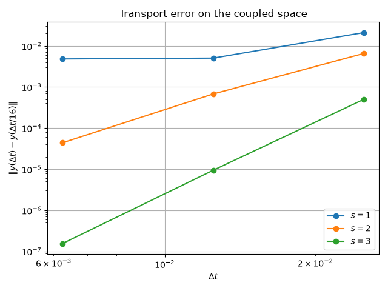
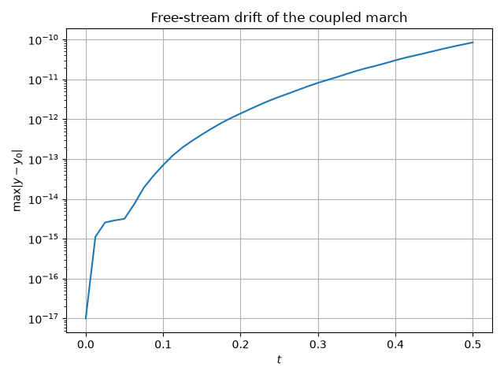

Note
Go to the end to download the full example code.
March a continuity-coupled field through the direct map#
The direct continuity map removes the block-diagonal structure a marcher sees in the element degrees of freedom: the field lives on the coupled global space, so the mass matrix of every stage is the congruence of the per-element masses through the transfer,
with \(P_e\) the block of DirectDofMap that carries element
\(e\)’s degrees of freedom onto the global unknowns. scatter_csc()
assembles that congruence, and march() accepts the result wherever it
would accept a plain element mass.
This example transports a scalar (a 0-form) over a mesh of three curved elements with a constant velocity, and then repeats the transport on a mesh that translates rigidly, where the constant field has to stay put.
The coupling enters only through the transfer, so the march itself is unchanged: residuals gather the global state onto the elements, assemble per-element operators there, and scatter the result back.
from dataclasses import dataclass
from pathlib import Path
from time import perf_counter
import matplotlib.pyplot as plt
import numpy as np
from hybsol import Decomposition, SingularSystemError, refined_solve
from scipy.sparse import csc_array
try:
from examples.plot_direct_continuity_sparse import (
block_owners,
build_hybsol_system,
)
from examples.plot_multi_element_laplace_direct_continuity import (
element_entries,
make_element_maps,
make_mesh,
)
except ModuleNotFoundError:
if "__file__" not in globals():
raise
import sys
sys.path.insert(0, str(Path(__file__).resolve().parents[1]))
from examples.plot_direct_continuity_sparse import (
block_owners,
build_hybsol_system,
)
from examples.plot_multi_element_laplace_direct_continuity import (
element_entries,
make_element_maps,
make_mesh,
)
from fdg import (
BasisSpecs,
BasisType,
FunctionSpace,
IntegrationMethod,
IntegrationSpace,
IntegrationSpecs,
KFormSpecs,
MovingMesh,
march,
projection_l2_primal,
scatter_csc,
stage_mass,
)
from fdg.moving_mesh import lie_derivative_operator
CELLS = 3
ORDER = 6
ORDER_INTEGRATION = 2 * ORDER
VELOCITY = 0.5
SPEED = 0.3
GEO_ORDER = 2
base_space = FunctionSpace(BasisSpecs(BasisType.LEGENDRE, ORDER))
specs = KFormSpecs(0, base_space)
mesh = make_mesh(1, CELLS)
transfer = mesh.compute_kform_direct_dof_map([specs] * CELLS)
maps = make_element_maps(1, ORDER_INTEGRATION, CELLS)
n_dofs = int(sum(specs.component_dof_counts))
Two small helpers move vectors between the global space and the elements. Both read the transfer’s arrays; nothing else in the march knows that the elements are coupled at all.
def element_view(y: np.ndarray, element: int) -> np.ndarray:
"""Gather one element's degrees of freedom from the global vector."""
first = int(transfer.element_offsets[element])
last = int(transfer.element_offsets[element + 1])
offsets = np.asarray(transfer.entry_offsets[first : last + 1], np.intp)
index = np.asarray(transfer.entry_index[int(offsets[0]) : int(offsets[-1])], np.intp)
values = np.asarray(
transfer.entry_value[int(offsets[0]) : int(offsets[-1])], np.double
)
return np.add.reduceat(values * y[index], offsets[:-1] - int(offsets[0]))
def global_scatter(element_vectors: list[np.ndarray]) -> np.ndarray:
"""Scatter element vectors onto the global degrees of freedom."""
result = np.zeros(int(transfer.global_dof_count))
for element, y_e in enumerate(element_vectors):
local, index, values = element_entries(transfer, element)
np.add.at(result, index, values * y_e[local])
return result
def coupled_mass(element_maps: list) -> csc_array:
"""Return the constrained mass of the elements' current masses."""
flat = np.concatenate([stage_mass(smap, specs).ravel() for smap in element_maps])
return scatter_csc(transfer, flat)
def transfer_matrix() -> np.ndarray:
"""Return the stacked transfer, mapping global unknowns to element dofs."""
matrix = np.zeros((int(transfer.element_dof_count), int(transfer.global_dof_count)))
row = 0
for element in range(CELLS):
local, index, values = element_entries(transfer, element)
np.add.at(matrix, (local + row, index), values)
row += n_dofs
return matrix
def project(function, element_maps: list) -> np.ndarray:
"""Return the stacked element projections of a physical function."""
return np.concatenate(
[projection_l2_primal(function, base_space, smap).values for smap in element_maps]
)
# Transport on a coupled mesh # # A Gaussian is advected at constant velocity. Advection at positive velocity # needs an inflow value: the leftmost vertex unknown is the traced value at # that point, so prescribing it closes the problem and the march runs on the # remaining unknowns. The exact solution is the same Gaussian shifted, and # the temporal error is measured against a fine-step march on the same # discrete space.
integration = IntegrationSpace(
IntegrationSpecs(ORDER_INTEGRATION, IntegrationMethod.GAUSS)
)
nodes = np.ascontiguousarray(integration.nodes()[0], np.double)
field_velocity = np.ascontiguousarray(np.full(nodes.size, VELOCITY).reshape(1, -1))
operators = [lie_derivative_operator(smap, specs, field_velocity) for smap in maps]
global_count = int(transfer.global_dof_count)
free = np.setdiff1d(np.arange(global_count), [0])
mass_free = coupled_mass(maps).toarray()[np.ix_(free, free)]
def transport_residual(y: np.ndarray, t: float) -> np.ndarray: # noqa: ARG001
"""Return minus the advective flux derivative of the field."""
return -global_scatter(
[
operator @ element_view(y, element)
for element, operator in enumerate(operators)
]
)
def residual_free(y_free: np.ndarray, t: float) -> np.ndarray:
"""Return the transport residual on the free unknowns."""
y = np.zeros(global_count)
y[free] = y_free
return transport_residual(y, t)[free]
def bump(x: np.ndarray) -> np.ndarray:
"""Return the transported profile."""
return np.exp(-(((x + 0.5) / 0.35) ** 2))
initial = project(bump, maps)
y0, *_ = np.linalg.lstsq(transfer_matrix(), initial, rcond=None)
FINAL_TIME = 0.4
def march_to(n_steps: int, stages: int) -> np.ndarray:
"""March to the final time in ``n_steps`` steps of equal size."""
return march(
residual_free,
y0[free],
FINAL_TIME / n_steps,
n_steps,
stages=stages,
mass=mass_free,
tolerance=1.0e-11,
).states[-1]
print("Transport on a coupled mesh")
print("---------------------------")
print(f"global unknowns : {transfer.global_dof_count}")
print(f"element unknowns : {transfer.element_dof_count}")
fine = march_to(256, 3)
for stages in (1, 2, 3):
errors = [
float(np.linalg.norm(march_to(n_steps, stages) - fine))
for n_steps in (16, 32, 64)
]
orders = [np.log2(errors[i] / errors[i + 1]) for i in range(len(errors) - 1)]
print(
f"stages {stages}: errors {['%.3e' % e for e in errors]}"
f" orders {['%.2f' % o for o in orders]}"
)
Transport on a coupled mesh
---------------------------
global unknowns : 19
element unknowns : 21
stages 1: errors ['2.100e-02', '5.027e-03', '4.798e-03'] orders ['2.06', '0.07']
stages 2: errors ['6.527e-03', '6.752e-04', '4.392e-05'] orders ['3.27', '3.94']
stages 3: errors ['5.000e-04', '9.412e-06', '1.555e-07'] orders ['5.73', '5.92']
The observed orders approach \(2s\), the order of the collocation rule, until the temporal error sinks below the spatial projection error of the order-\(6\) elements.
reference_dofs, *_ = np.linalg.lstsq(
transfer_matrix(),
project(lambda x: bump(x - VELOCITY * FINAL_TIME), maps),
rcond=None,
)
reference_dofs[0] = 0.0
final = march_to(32, 2)
spatial_gap = float(np.linalg.norm(final - reference_dofs[free]))
print(f"|u(32 steps, s=2) - exact projection|: {spatial_gap:.3e}")
fig, ax = plt.subplots()
step_counts = np.array([16, 32, 64])
for stages in (1, 2, 3):
errors = [
float(np.linalg.norm(march_to(n_steps, stages) - fine)) for n_steps in step_counts
]
ax.loglog(FINAL_TIME / step_counts, errors, "o-", label=rf"$s = {stages}$")
ax.set(
xlabel=r"$\Delta t$",
ylabel=r"$\|y(\Delta t) - y(\Delta t/16)\|$",
title="Transport error on the coupled space",
)
ax.legend()
ax.grid()
fig.tight_layout()
plt.show()

|u(32 steps, s=2) - exact projection|: 8.030e-01
# The same march through hybsol
#
# The dense mass above is a stand-in for the real thing: a production march
# never forms the constrained matrix, it factors the system block by block.
# scatter_csc() still assembles the stage system, but
# block_owners() partitions its unknowns by owner – one block per
# shared object, one per element’s free modes – and hybsol factors that
# block structure once per stage. Every solve of the fixed-point iteration
# then runs against the factors, refined against the stored system, and the
# march never sees a dense matrix of the global state.
@dataclass
class _PermutedSolver:
"""Solve the reduced system in the block order hybsol factorizes in."""
system: object
decomposition: Decomposition
order: np.ndarray
def __post_init__(self) -> None:
self._unpermute = np.empty_like(self.order)
self._unpermute[self.order] = np.arange(self.order.size)
def solve(self, rhs: np.ndarray) -> np.ndarray:
"""Return the mass solve of one right-hand side, refined."""
return refined_solve(
self.system,
self.decomposition,
rhs[self.order],
tolerance=1.0e-12,
)[self._unpermute]
owners, _ = block_owners(transfer, mesh, ORDER, CELLS)
factor_seconds = 0.0
def hybsol_mass_solver(t: float) -> _PermutedSolver: # noqa: ARG001
"""Factor the constrained stage system at ``t`` into hybsol blocks."""
global factor_seconds
matrix = coupled_mass(maps)[free][:, free].tocsc()
for blocking in ("element/object", "scalar"):
system, order = build_hybsol_system(matrix, owners, free, blocking)
if blocking != "scalar" and not system.is_valid():
continue
try:
started = perf_counter()
decomposition = system.decompose()
factor_seconds += perf_counter() - started
except SingularSystemError:
continue
return _PermutedSolver(system, decomposition, order)
raise RuntimeError("no hybsol blocking could be packed")
start = perf_counter()
hybsol_final = march(
residual_free,
y0[free],
FINAL_TIME / 32,
32,
stages=2,
mass_solver=hybsol_mass_solver,
tolerance=1.0e-11,
)
wall = perf_counter() - start
dense_final = march_to(32, 2)
print()
print("The same march through hybsol")
print("-----------------------------")
print(f"factorization time over all stages : {factor_seconds:.3f} s")
print(f"march wall time : {wall:.3f} s")
print(
f"max |dense - hybsol| at the final time: "
f"{np.max(np.abs(dense_final - hybsol_final.states[-1])):.3e}"
)
The same march through hybsol
-----------------------------
factorization time over all stages : 0.001 s
march wall time : 0.164 s
max |dense - hybsol| at the final time: 1.832e-15
The drift case runs through the block solver as well: the stage systems change with the mesh, so each stage factors its own blocks, and the constant field is still the exact fixed point of every slab.
# Free streaming on a translating mesh # # A mesh that translates rigidly carries a constant field exactly: the Lie # derivative annihilates constants, so the coupled stage equations have the # initial state as their fixed point whatever the stage masses do. The # residual assembles the Lie derivative from the mesh velocity of the stage, # and the mass follows the stage maps, exactly as an uncoupled march would.
geometry_space = FunctionSpace(BasisSpecs(BasisType.LAGRANGE_UNIFORM, GEO_ORDER))
def geometry_dofs(t: float) -> np.ndarray:
"""Return the geometry degrees of freedom of the translating elements."""
corners = np.linspace(-1.0, 1.0, CELLS + 1) + SPEED * float(t)
rows = [np.linspace(corners[e], corners[e + 1], GEO_ORDER + 1) for e in range(CELLS)]
return np.stack(rows).reshape(CELLS, 1, -1)
STEP_SIZE = 0.0125
N_STEPS = 40
STAGES = 2
moving = MovingMesh(
geometry_dofs,
STEP_SIZE,
N_STEPS,
element_count=CELLS,
geometry_space=geometry_space,
integration=integration,
stages=STAGES,
)
stage_times = np.array(
[
[moving.stage_time(step, stage) for stage in range(STAGES)]
for step in range(N_STEPS)
]
)
operators_of: dict[float, list[np.ndarray]] = {}
def moving_residual(y: np.ndarray, t: float) -> np.ndarray:
"""Return minus the Lie derivative along the mesh velocity."""
key = float(t)
if key not in operators_of:
step, stage = np.unravel_index(
np.argmin(np.abs(stage_times - t)), stage_times.shape
)
velocity = moving.velocity(int(step), int(stage))
operators_of[key] = [
lie_derivative_operator(smap, specs, np.ascontiguousarray(velocity[e]))
for e, smap in enumerate(moving.space_maps(int(step), int(stage)))
]
return -global_scatter(
[
operator @ element_view(y, element)
for element, operator in enumerate(operators_of[key])
]
)
def moving_mass(t: float) -> np.ndarray:
"""Return the constrained mass at a stage time of the moving mesh."""
tolerance = 1.0e-9 * STEP_SIZE
matches = np.argwhere(np.abs(stage_times - t) <= tolerance)
if matches.size == 0:
raise ValueError(f"Time {t} is not a stage time of the moving mesh.")
step, stage = (int(value) for value in matches[0])
return coupled_mass(moving.space_maps(step, stage)).toarray()
constant = project(lambda x: np.ones_like(np.asarray(x, dtype=np.double)), maps)
rest_state, *_ = np.linalg.lstsq(transfer_matrix(), constant, rcond=None)
result = march(
moving_residual,
rest_state,
STEP_SIZE,
N_STEPS,
stages=STAGES,
mass=moving_mass,
anderson_depth=0,
)
drift = np.max(np.abs(result.states - rest_state), axis=1)
print()
print("Free streaming on a translating mesh")
print("------------------------------------")
print(f"maximum drift of the constant field: {drift.max():.3e}")
print("the constant is the exact fixed point of every slab, so plain")
print("fixed-point iteration preserves it up to roundoff, which the")
print("advection operator amplifies by ||M^-1 L|| each step")
fig, ax = plt.subplots()
ax.plot(result.times, drift + 1.0e-17)
ax.set(
xlabel="$t$",
ylabel=r"$\max |y - y_0|$",
yscale="log",
title="Free-stream drift of the coupled march",
)
ax.grid()
fig.tight_layout()
plt.show()

Free streaming on a translating mesh
------------------------------------
maximum drift of the constant field: 8.454e-11
the constant is the exact fixed point of every slab, so plain
fixed-point iteration preserves it up to roundoff, which the
advection operator amplifies by ||M^-1 L|| each step
The moving stage systems go through the block solver the same way: each stage factors the constrained mass of its own geometry, and the march solves every fixed-point right-hand side against that factorization.
def hybsol_moving_mass(t: float) -> _PermutedSolver:
"""Factor the constrained moving mass at ``t`` into hybsol blocks."""
matches = np.argwhere(np.abs(stage_times - t) <= 1.0e-9 * STEP_SIZE)
if matches.size == 0:
raise ValueError(f"Time {t} is not a stage time of the moving mesh.")
step, stage = (int(value) for value in matches[0])
matrix = coupled_mass(moving.space_maps(step, stage))
all_free = np.arange(int(transfer.global_dof_count))
for blocking in ("element/object", "scalar"):
system, order = build_hybsol_system(matrix, owners, all_free, blocking)
if blocking != "scalar" and not system.is_valid():
continue
try:
decomposition = system.decompose()
except SingularSystemError:
continue
return _PermutedSolver(system, decomposition, order)
raise RuntimeError("no hybsol blocking could be packed")
hybsol_result = march(
moving_residual,
rest_state,
STEP_SIZE,
N_STEPS,
stages=STAGES,
mass_solver=hybsol_moving_mass,
anderson_depth=0,
)
hybsol_drift = np.max(np.abs(hybsol_result.states - rest_state), axis=1)
print()
print("Free streaming through the block solver")
print("---------------------------------------")
print(f"maximum drift of the constant field: {hybsol_drift.max():.3e}")
print(
f"max |dense - hybsol| over the whole run: "
f"{np.max(np.abs(result.states - hybsol_result.states)):.3e}"
)
Free streaming through the block solver
---------------------------------------
maximum drift of the constant field: 8.454e-11
max |dense - hybsol| over the whole run: 3.231e-27
Total running time of the script: (0 minutes 2.711 seconds)